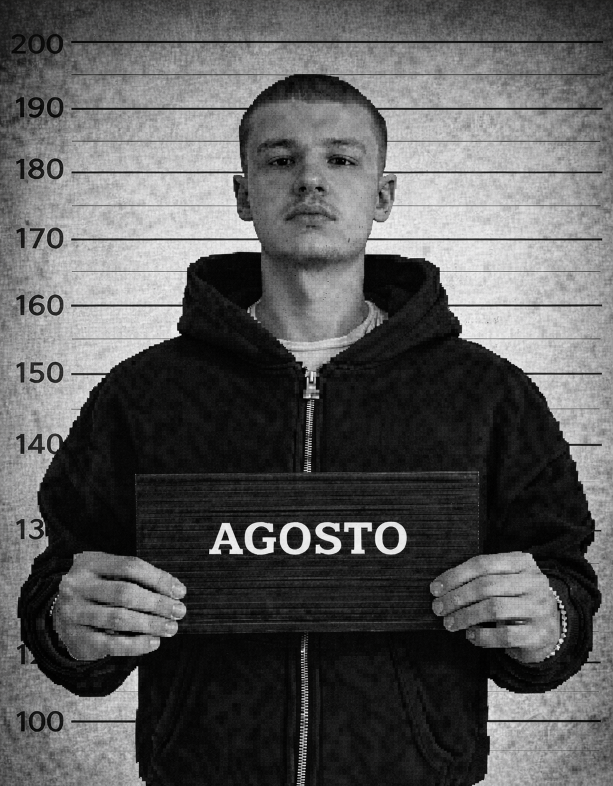
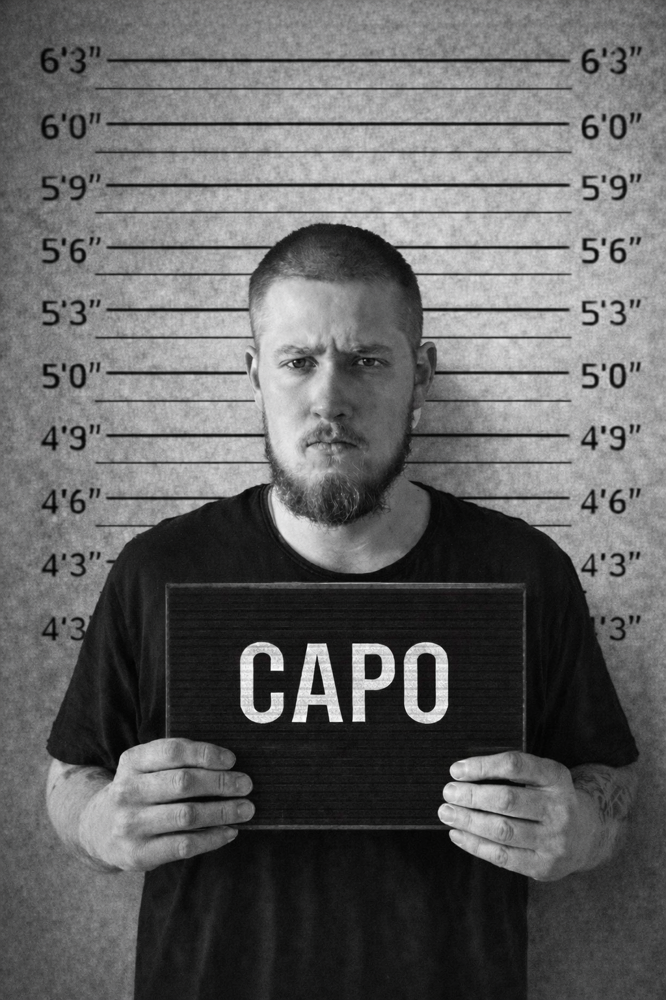

Tausta
Varkaudesta ponnistava duo rakentaa omaa tyyliään vahvan tunnelman ja suoran ilmaisun kautta.
Loaded / artist bio / local archive
Agosto ja Capo ovat kaksi nuorta artistia lähtöisin Varkaudesta. Luke eli Capo on alunperin Lontoosta, ja hän räppää usein myös englanniksi.
Varkaudesta ponnistava duo rakentaa omaa tyyliään vahvan tunnelman ja suoran ilmaisun kautta.
Suomi ja englanti kulkevat mukana rinnakkain, mikä tekee kokonaisuudesta tunnistettavan.
Härkäfesteillä duo sai yleisön hyvin mukaan ja jätti vahvan vaikutelman esiintymisellään.

Kotikaupunki :Varkaus
Ikä :22
Rikokset:Soossin hallussapito

Kotikaupunki :Varkaus
Ikä :22
Rikokset:Laiton maahanmuutto